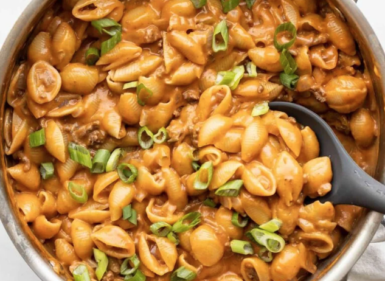
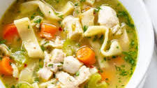

1 red bell pepper
1 zucchini
1 yellow squash
1/2 red onion
1.3 lbs. boneless, skinless chicken breast
2 Tbsp cooking oil
1 cup frozen green beans
1/3 cup pesto
1/8 tsp salt
1/8 tsp freshly cracked pepper
1 Tbsp grated Parmesan
Directions
Chop the bell pepper, yellow squash, and zucchini, and slice the red onion. Aim to make the pieces the same size.
Cube the chicken breasts into ½-inch pieces.
Add the cooking oil to a large skillet and heat over medium-high. Once the skillet and oil are very hot, add the chicken and sauté until the chicken pieces are opaque (3-5 minutes – the chicken will continue to cook as you add vegetables). Add the green beans to the skillet and sauté for 1-2 minutes.
Add the bell pepper and red onion to the skillet. Sauté for 1-2 minutes.
Add the yellow squash and zucchini to the skillet and continue to sauté.
Turn the heat off, add the pesto to the skillet, and stir until everything is coated. Give the vegetables a taste and add salt, pepper, or more pesto if desired. Top with a light sprinkle of Parmesan just before serving.
One Pot Cheeseburger Pasta

Ingredients
1 yellow onion
1 Tbsp olive oil
1/2 lb. of beef
2 Tbsp all-purpose flour
1 8oz. can tomato sause
2 cups of beef broth
1/2 lb. pasta shells
2 Tbsp hot dog relish
2 green onions, sliced
Directions
Dice the onion, and add the onion, olive oil, and ground beef to a large deep skillet and sauté over medium heat.
Add the flour to the skillet.
Add the tomato sauce and beef broth to the skillet and stir to dissolve the flour.
Add the uncooked pasta to the skillet and stir. The liquid in the skillet may not fully cover the pasta.
Place a lid on the skillet, turn the heat up to medium-high, and let the liquid come up to a boil. Once it reaches a boil, give it a quick stir to loosen any pasta from the bottom of the skillet, and turn the heat down to low. Let the pasta simmer, stirring occasionally until the pasta is tender and the sauce has thickened.
Add the shredded cheddar to the skillet and stir until it has melted into the sauce. Stir the hot dog relish into the sauce and then top with sliced green onions.
Chicken Noodle Soup

Ingredients
1 medium yellow onion
3 garlic cloves
4 carrots
2 ribs celery
1 Tbsp parsley
2 Tbsp olive oil
1 tsp dried basil
½ tsp dried thyme
1 bay leaf
¼ tsp black pepper
1-3 tsp salt
2 chicken breasts
8 cups chicken broth
6 oz. egg noodles
Directions
Dice onion, mince garlic, peel and dice carrots, dice celery, and mince the parsley. Set the parsley aside.
Add olive oil, onion, carrots, and celery to a large soup pot and cook on medium heat until vegetables have softened, stirring occasionally.
Add the minced garlic, dried basil, dried thyme, bay leaf, black pepper, and 1 tsp salt to the pot.
Add chicken breasts to the pot and cover with the chicken broth.
Cover the pot with a lid, bring it to a boil over high heat, then reduce the heat to low and simmer for one hour.Remove the chicken from the pot. Using two forks, pull the meat and shred it. Taste the broth and season with additional salt, if needed.
Add the egg noodles to the pot, turn the heat up to high, and boil the noodles until tender (about 7 minutes). Return the shredded chicken to the pot.